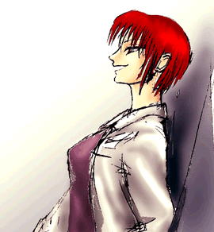

president,editor Macfist
art director Momiji
| 「ったく・・・なんかいいことは無いのかよ・・。」 原因は今朝の営業成績の結果だ。同期の仲間たちはどんどんと経験を積み契約をとってくるというのにリストラされかねない自分の状況がいまいましく思えて仕方がなかった。 今夜は飲みすぎた。疲労しきった体にアルコールがまわって足取りが重い。駅につくまで一眠りしよう。そうすれば少しは楽になる。しかし、そんな思いも砕かれた。途中の駅で乗り込んできたのが騒々しい二人組みだったからだ。年はまだ高校生くらいだろうがやけに洒落っけのある服装が大人びていて近ごろのコギャルはこんなものかと妙に関心するものがあった。腹立たしかったが楽しそうに喋る様子がうらやましかった。 「なんで女の子は楽しそうなんだろう。 自分も女の子だったら楽しく毎日を過ごせたかもしれないな・・・。」 妄想癖があったわけでもないがふとそんなことを想った。駅に着いたのはいいが、まっすぐ歩くこともままならない。こういうのを千鳥足というんだ。昔の人はうまくいったもんだな・・。妙に納得しながら足を進めようとするが、足取りは大きくバランスをくずし、車道に出たことに気がつかなかった。 「あぶない！！」 誰かが叫ぶ声が聞こえた。 ・・・・・アスファルトを削るような騒音・・・・・ 「大丈夫か？！」 車の運転手らしき人物が駆けよってくる。返事をしようとするができない。激しい痛みが全身を襲う。このまま死ぬのか？それだけはご免だ。 「救急車よべ！誰か・・・。」 「おはようございます。」 威勢のいい挨拶がオフィスに響く。 新人らしき社員の列を抜けながら中年の男性が一人に話しかけた。 「藤谷は出社しとらんのか？」 「ええ・・まだです。連絡もありません。」 「けしからん奴だ。ちょっと彼の家へ電話してみてくれ。」 「かしこまりました。」 「やれやれ、昨日厳しく言いすぎたせいかな・・・・。」 オフィスに沈黙が走った。 「えっ？！交通事故？？」 ここはどこだろう・・・自分はどうなってしまったんだろう。まさか"Johney got his gun"みたいに胴体と頭だけになってしまったんだろうか・・・そう考えると自分がどうなったのか確認してみたくなった。手と足が何かに触れている感触がある。なんとか動かそうとするができない。口にはガーゼが挟んであって喋れない。包帯の隙間からわずかに病室らしき天井が見える。 視界の端には病室でよく見るカーテンがある。 「助かったんだ。」 安堵感に浸る。その瞬間けたたましい足音が聞こえ始めた。 「なんてこった・・・」 聞き慣れた声が聞こえる。よく怒鳴られた声だ。しかし、あまりにも似ている。 カーテンの向こうですすり泣く声も聞こえる。 「先生、治る見込みは・・・」 先生はどういった仕草をとったのだろうか？ それとも僕には聞こえない小さな声で答えたんだろうか・・・・・・ 「そうですか。今日の所はこれでひきあげます。有難うございました。」 何人かがぞろぞろと歩く音がする。どうやら出ていったらしい。 「・・・藤谷？僕と同じ名前だ。ベッドのとなり同士が同じ名前なんて奇妙だな。」 「気がついたかしら？」 誰かが顔を覗き込む。年はまだ20代後半だろうか・・女性だ。白衣からしてさっき先生と呼ばれていた人物だろう。そばにいた看護婦が口のガーゼを外してくれた。看護学生かな？まだ 10代の感じがする。やっと口が楽になった。聞くことは山ほどある。 「先生。僕は、助かったんですか？」 彼女は微動だにせず言った。 「可愛そうだけど。植物人間ね。」 植物人間？何故？こうして僕は答えているじゃないか・・・さっきこの病室にいたのは多分、僕の上司だろう。ひょっとしてとなりのカーテンのベッドで横たわっているのは僕自身なのか？ わけがわからない。 「ある人が一目見て気に入ったの。だから選んだのよ。」 軽く微笑みながら彼女は言った。激しく彼女に食いかかろうとしたが無駄だった。隣を仕切るカーテンが取り払われると、そこにあったのは虚ろな表情を浮かべた自分の顔だった。 「なんてこった・・・・・・・。」 彼女は満足そうな表情で僕の（以前の）体に触れながらやさしくキスをした。 |
 「もうわかったでしょ？貴方は植物人間なの。」今の僕は一体どんな姿なんだろう・・・そう考えると得体のしれない恐怖が全身に走った。 僕は・・・どうなってしまったんだろう。 「悪いけどその体は間に合わせで使ってね。貴方に見合った体を用意させていただくわ。」 四肢を固定していたベルトが取り払われるとようやく体の自由がきくようになった。しかし、思うように体が前に進まない。ようやく病室の洗面台にたどり着くと鏡を見て絶句した。 「新しい自分とご対面ね。」 看護婦が笑いながら話しかけた。鏡に写っていたのは70を過ぎるしわくちゃの老人だった。 「思い詰めて自殺とかしないでね。今だけだから・・・・。今のうちに次の体の希望でも聞いておきましょう。男？女？どうせならモテるタイプの方がいいわね？日本人？それとも外人？」 「おまえたちは何者なんだ？何故？どうしてこんな事を・・・。」 今の自分の思いをぶつけたつもりだったが言葉にならなかったのかもしれない。熱い涙が頬を伝う。やりきれなさと、自分ではどうしようもない絶望感で胸がいっぱいになった。 「私たちも本当の自分の体ではないの。」 彼女は言った。 思わず不意を打たれた。自分の体ではない？どういうことだろう？ 「この体の持ち主は、私の体で生活しているの。」 脳移植！その実験材料にされたんだ。それで合点がいく。 「私は最初の実験台。この実験を企画したある人にお願いして入れ替えてもらったの・・・。 この体の持ち主は私の一番愛した人だった。なのに私ではなく、他の人を愛してしまった。 ・・・今は私がこの体の持ち主。私の思考で考え、私の意思で行動する。夜、私を抱きながら私の姿をした彼女が耳もとでささやくの、『愛してる』って。」 笑いながら話す彼女の指には結婚指輪が光っていた。 「狂ってる・・・。」 「失礼ね。お互い幸せになれたんだから、彼女は感謝すべきよ。過去の清算をするのがどれだけ大変だったか・・・。」 「過去の清算って・・・。」 「昔のオトコのこと。」 なるほど。いかにもその辺の男なら声をかけそうなタイプだ。 「私たちってことは・・・君もかい？」 ずっと黙りっぱなしだった看護婦の方へ目をやった。 「私は・・・。」 初めて話す言葉を耳にした。さっきまで注意を払っていなかったが、まるで絵画から飛び出してきたような美少女だ。日本人ばなれした顔だちがハーフっぽい。 「彼女はね。ちょっと特殊なの。ほら、見せてあげて・・・・。」 彼女は少し面倒そうな素振りを見せる看護婦を愛撫しながら、ゆっくりワンピースの白衣のボタンを外し始めた。つるんとした白いおなかの下に手を運びゆっくりとパンティを下げるとそこにはピンク色の女性の陰部が、そして彼女が愛撫することによって次第に少年めいた尖ったものが姿を現わし始めた。 これは現実なんだろうか？ひょっとして悪い夢なのではないだろうか？僕は気が動転したせいだろうか、それともこの老人の体がよくないのか意識が朦朧とし始め、気を失ってしまった。 気がつくと病室のベッドに戻されていた。少し夢を見ていた様な気がする。怒鳴られてばかりいたような、いつもの職場の風景だったと思う。職場の同僚は僕がこんな姿に鳴っていることなど知らずにせっせと仕事に励んでいるのだろう。しばらく思いにふけてカフカの「変身」という小説を思い出した。目が覚めると得体のしれない毒虫の姿になっている恐ろしい話しだ。目が覚めると大金持ちになっているとかそんなことなら歓迎するが・・・。もしやと思い自分の姿を再度確認したが、いつのまにか涙が頬を伝っていた。もう一度自分の元の姿を見ようと隣りのベッドを見たがそこには何もなかった。 「なんでこんなことになったんだろう。」 ・・・・怒りや憎しみ、不安でもなく自分ではどうしようもないという深い絶望の悲しみだけが胸の中を満たしていた。このまま死ぬのだろうか？それだけはご免だ。死ぬ前にこの気持ちを晴らさなくては死んでも死にきれない。あの女医らしき女と看護婦。そしてこの実験に参加したやつらを惨めな姿にするまでは・・。しかし、体を少し動かすだけでも一苦労するこの体でどうやって復讐する手だてがあるだろうか？・・・もしかして、そこまで考えているのではないか？僕をはねた車の運転手もグルなんじゃないだろうか？多分そうだろう。その方が自然だ。何かこれには大きなウラがあるように思える。だれかがウラで絵をかいて（計画するということ）いるんじゃないだろうか？きっとそうに違いない。あの女医たちも単なる尖兵に過ぎないのだ。 |
|
|